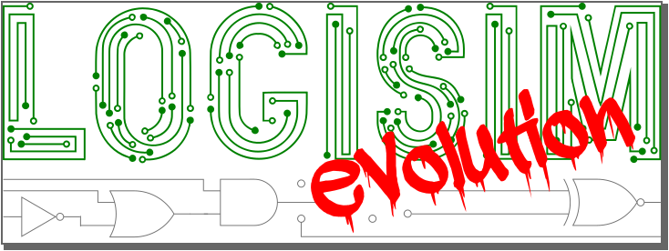

关于 Logisim-evolution 程序
Logisim 是一款用于设计和仿真数字逻辑电路的教育工具。它最初由 Carl Burch 博士 创建，并一直积极开发至 2011 年。此后，作者专注于其他项目，最近开发已正式停止 （请参阅他的消息）。
与此同时，来自一组瑞士院校（伯尔尼应用科技大学、日内瓦景观、工程与建筑学院、沃州工程与管理学院）的人员开始开发一个适合其课程的 Logisim 版本，集成了多种工具——例如时序图、直接在电子板上测试原理图的功能、TCL/TK 控制台等。
我们决定以 Logisim-evolution 的名称发布这个新的 Logisim 版本，以突出这些年来发生的大量变化，并且我们积极寻求社区的贡献。
本程序是自由软件：您可以根据自由软件基金会发布的 GNU 通用公共许可证第 3 版的条款重新分发和/或修改它。发布本程序是希望它有所帮助，但不提供任何担保；甚至不包含对适销性或特定用途适用性的默示担保。有关更多详细信息，请参阅 GNU 通用公共许可证（见下文许可证部分）。
语言
Logisim 支持多种语言。其中许多语言是通过 DeepL 自动翻译的。如果您发现奇怪的翻译，请随时在相应的属性文件中进行更正并发起拉取请求！
logisim-evolution 的新特性
- 时序图——查看电路中信号的演变
- 电子板集成——原理图现在可以在真实硬件上进行仿真！
- 电路板编辑器——添加新的电子板
- VHDL 组件——一种行为由 VHDL 指定的新组件类型
- TCL/TK 控制台——电路与用户之间的接口
- DIP 开关
- RGB LED
- 大量错误修复
- GUI 改进
- 自动更新
- 代码重构
- ...
向后兼容性
我们无法保证 logisim-evolution 与原始 Logisim 创建的文件向后兼容。我们内置了一个解析器，它会更改组件名称以满足 VHDL 对变量名的要求，但此后组件的形状已经演变（例如 RAM 和计数器）。在 logisim-evolution 中打开电路时，您可能需要稍作修改——但更改将以新格式存储，因此您只需执行一次操作。
愿望清单
Logisim-evolution 是一个持续发展的软件，我们有一些想要实现的想法。具体来说，我们希望拥有：
- 代码的单元测试
- 详尽的文档
- 测试电路
- ……如果您愿意为其中任何一项做出贡献，请随时联系我们！
如何获取 logisim-evolution 支持
遗憾的是，我们没有足够的资源为 logisim-evolution 提供直接支持。不过，我们会尽力处理已提出的问题。
如果您发现错误或有有趣的功能想法，请直接提交工单！
许可证
代码基于GNU 通用公共许可证第 3 版
本地副本：GPL。

致谢
Logisim-evolution 项目基于以下作者的 Logisim 软件：- Carl Burch，Hendrix College，美国
- Moshe Berman，Brooklyn College，美国
- Theldo Cruz Franqueira，Pontifícia Universidade Católica de Minas Gerais，巴西
- 赵涵远，清华大学，中国
- David H. Hutchens，Millersville University，宾夕法尼亚州，美国
- Theo Kluter，Berner Fachhochschule | Haute école spécialisée bernoise，瑞士。
- Torsten Maehne，Berner Fachhochschule | Haute école spécialisée bernoise，瑞士。
- Tom Niget，LEAT，Polytech Nice-Sophia，法国
- Marcin Orłowski，波兰
- Kevin Walsh，圣十字学院，美国
- 刘宇晨，北京工业大学，中国
- 伯尔尼应用科学大学 | 伯尔尼高等专业学校，瑞士
- 圣十字学院，美国
- 沃州工程与管理高等学院，瑞士
- 日内瓦景观、工程与建筑高等学院，瑞士
下一节： 用户指南。